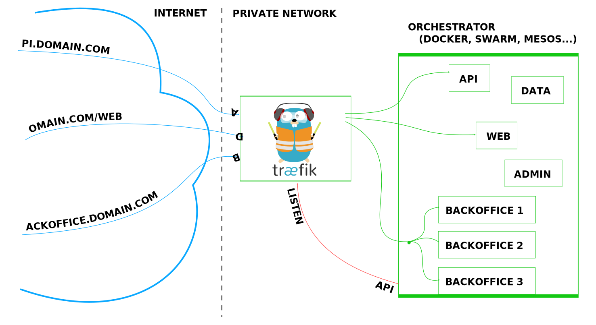
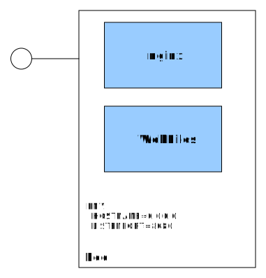

Effective platform building
with Kubernetes.
Wojciech Barczyński - SMACC.io | Hypatos.ai
16 November 2018
Wojciech Barczyński
- Lead Software Developer
& System Engineer - K8S:
2.5 years @ startups - Before:
Openstack, SAP R&D - + Visiting lecturer and Trainer
Github: wojciech12 | Linked: IN | HP: wbarczynski.pl | T: @wbarczynski
Story
- Lyke - [12.2016 - 07.2017]
- SMACC - [10.2017 - present]
My Role: Leading the change, implementing it
Why we like kubernetes?
For me
- Data center as a black box
- Lingua Franca
- Batteries included
- Learn-as-you-go experience
- Independent from IaaS provider
Notice: not a silver bullet
Black Box
Deploy!
make docker_push; kubectl create -f app-srv-dpl.yaml
Black Box
Scale up! Scale down!

kubectl --replicas=3 -f app-srv-dpl.yaml
Lingua Franca

Lingua Franca

Lingua Franca
Ingress Controller:
 Drop-in: traefik, nginx, haproxy, envoy...Lyke
- E-commerce Indonesia
- Mobile-only
- 50k+ users
- 2M downloads
- Top 10 Fashion Apps
Google Play Store
 http://www.news.getlyke.com/single-post/2016/12/02/Introducing-the-New-Beautiful-LYKE
http://www.news.getlyke.com/single-post/2016/12/02/Introducing-the-New-Beautiful-LYKE
Now JollyChic Indonesia
Good parts
- Fast Growth
- A/B Testing
- Data-driven
- Product Manager,
UI Designer,
Mobile Dev,
and tester - one body


Monitor legacy with new stack

Story
- Legacy on AWS and AWS ECS :/
- Self-hosted K8S on ProfitBricks (PB)
- ooo... K8S can use Azure Active Directory :D
Story
- Get to Microsoft ScaleUp
- Welcome Azure!
- Luckily. AKS
- Easy migration from PB to AKS
Azure Kubernetes Service
- Independent from IaaS
- Plug and play
- Integration with GPU
- Our OnPrem = Our OnCloud
Simplicity
- az aks CLI for setting k8s - README.rst
- Terraform for everything else
- Secrets: 1Password and gopass.pw
Terraform also sets our AWS
Difference ☠
- Two teams in Berlin and Warsaw
- Me in Warsaw
Repo .travis.yml
language: go
go:
- '1.16'
services:
- docker
install:
- curl -sL https://${GITHUB_TOKEN}@raw.githubusercontent.com/smaccio/smacc-ci/master/prerequisites.sh | bash
- if [ -f "tools/travis/install.sh" ]; then bash tools/travis/install.sh; fi;
script:
- dep ensure
- make lint
- make test
- if [ -z "${TRAVIS_TAG}" ]; then make snapshot; fi;
deploy:
- provider: script # deploy to docker repo
script: make release
skip_cleanup: true
on:
tags: true
all_branches: true
condition: "$TRAVIS_TAG =~ ^v.*"
- provider: script # to staging cluster
script: curl -sL https://${GITHUB_TOKEN}@raw.githubusercontent.com/smaccio/smacc-ci/master/deploy.sh | bash
skip_cleanup: true
on:
tags: true
all_branches: true
condition: "$TRAVIS_TAG =~ ^v.*"
- provider: script # enforce to dev cluster
script: curl -sL https://${GITHUB_TOKEN}@raw.githubusercontent.com/smaccio/smacc-ci/master/deploy_snapshot.sh | bash
skip_cleanup: true
on:
all_branches: true
condition: $TRAVIS_BRANCH =~ ^master|develop$ # squad decide
notifications:
slack:
rooms:
- smaccio:PLAIN_TEXT_HASHMakefile
|- tools
| |- Makefile
| |- kube-service.yaml
| \- kube-deployment.yaml
|
|- Dockerfile
\- MakefileMakefile only tasks for dev
Continuous Deployment
- Github
- TravisCI
- hub.docker.com
- AKS
Continuous Deployment
git tagandpush- smacc-platform.git
- Deploy to staging
- PR to production
Kubernetes
- Pure, generated, kubernetes config
- 2x kubernetes operators
What worked
- Hiding k8s
- Understandable CD process
Would do different
- More sensitive to feedback
Next
- Acceptance tests listen on k8s events
- Deployment tool based on missy
- Keeping an eye on Istio
K8S - Linux / App server?
- Out-of-box integration
- Lingua Franca - AWS Service Operator
- Learn as you go
- onPremise = onCloud = OnLocal (e.g., kube-desktop)
K8S - Linux / App server?
- Do not terrorize your devs with K8S
- No free lunch... app must be smarter
- On VM vs K8S vs Lambdas?
Thank you. Questions?
ps. We are hiring.
github.com/wojciech12/talk_cloudnative_and_kubernetes_waw

Backup Slides
Kubernetes Concepts
Pods
- See each other on localhost
- Live and die together
- Can expose multiple ports

Side-cars

Basic Concepts
| Name | Purpose | |
|---|---|---|
| Service | Interface | Entry point (Service Name) |
| Deployment | Factory | How many pods, which pods |
| Pod | Implementation | 1+ docker running |